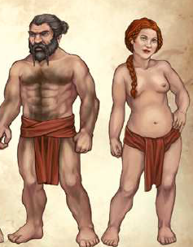

Die gängigen Legenden und Mythen Aventuriens erzählen, dass das Volk der Zwerge von Angrosch (bei Menschen: Ingerimm) geschaffen wurde, um die Schätze der Erde zu beschützen und gegen die Übermacht der Drachen zu streiten.
Üblicherweise wohnen Zwerge in unterirdischen Städten, die sie tief unter den Gebirgen errichtet haben. Einst lebten alle Zwerge in Xorlosch, der heiligen Stadt im nördlichen Teil des Eisenwaldes, den Ingrakuppen. Aus den ehemals acht Stammvätern und -müttern der Angroschim gingen mehrere große Zwergenvölker hervor, die sich über beziehungsweise unter nahezu alle Gebirge Aventuriens ausbreiteten: Die kämpferischen Ambosszwerge bewohnen das gleichnamige Ambossgebirge sowie die Berge des Thasch am Rande des Orklandes. Den meisten Menschen kommt wohl diese Zwergenart in den Sinn, wenn sie vom kleinen Volk berichten. Die traditionsverhafteten Erzzwerge leben bis heute in Xorlosch und bewahren ihr Erbe mit sprichwörtlich zwergischer Beharrlichkeit. Sie bevölkern vor allem die Ingrakuppen, aber auch in den Koschbergen, im Eisen- und Phecanowald und sogar in Fasar ist ihr Volk zu Hause. Die gutmütigen und lebenslustigen Hügelzwerge haben die Höhlen und Minen verlassen und bewohnen gemeinsam mit den Menschen die Grafschaft Hügellande und die großen Städte des Fürstentums Kosch. Das Volk der Brillantzwerge verlor seine angestammten Stollen und Bingen in den Beilunker Bergen durch die Schergen des Dämonenmeisters Borbarad. Seit einigen Jahren aber haben sie im Raschtulswall eine neue Heimat gefunden.
Neben diesen vier großen Völkern existieren auch kleine Sippen oder Stämme, die sich im Finsterkamm und weiter im hohen Norden ihre Heimstätten gesucht haben. In Städten wie Angbar, Fasar und Zwerch leben zudem seit Generationen Menschen und Angroschim, wie die Zwerge sich nach ihrem Schöpfer selbst nennen, friedlich zusammen und proitieren voneinander. Eines der wesentlichen Merkmale, das einen Zwerg vom Menschen unterscheidet, ist seine geringe Körpergröße. Kaum ein Zwerg wird größer als 1,40 Schritt, aber sie haben einen kompakten Körperbau und schwere Knochen. Zwerge sind ausgesprochen zäh und widerstandfähig und ihre Sturheit ist sprichwörtlich. Ihre Augen haben sich an ein Leben unter der Erde angepasst, sodass sie selbst in beinahe vollständiger Dunkelheit vergleichsweise gut sehen können. Der Bart eines Zwergenmannes ist sein ganzer Stolz, und oft wird er kunstvoll zu Zöpfen gebunden und mit Schmuck verziert.
Zwerge gehören zu den langlebigsten Spezies Aventuriens und erreichen ein Alter von bis zu 400 Jahren. Es ist aber keine Seltenheit, dass Zwerge noch älter werden, und mancherorts wird sogar erzählt, dass alte Angroschim zunehmend versteinern, bis sie schließlich wieder zu dem Element geworden sind, aus dem ihr Gott sie einst erschuf.
Ihre Frauen verehren die Zwergenvölker in höchstem Maße, und oft werben mehrere Kandidaten jahrzehntelang um eine der seltenen Zwergenfrauen. Auch wenn sie wie Kinder als besonders beschützenswert erachtet werden, so sind sie doch keinesfalls wehrlos: Einige der gefürchtetsten Drachentöter der Vergangenheit waren mutige Zwerginnen.